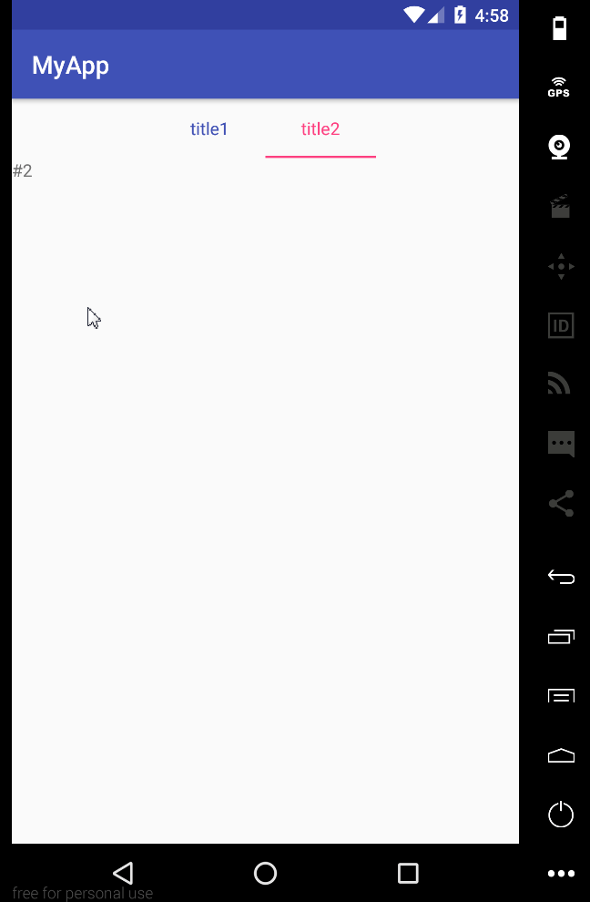

安卓微信滑动Tab页时底部栏背景色有一个平滑的渐变效果，这个渐变效果是使用ArgbEvaluator实现的。本文介绍了ArgbEvaluator的用法。
这篇文章 提到了ArgbEvaluator
ArgbEvaluator ArgbEvaluator.evaluate(float fraction, Object startValue, Object endValue);根据一个起始颜色值和一个结束颜色值以及一个偏移量生成一个新的颜色，分分钟实现类似于微信底部栏滑动颜色渐变。
ArgbEvaluator继承自TypeEvaluator，TypeEvaluator的定义相当简单：
1 2 3 4 5 6 7 8 9 10 11 12 13 14 15 16 17 18 19 20 21 22 23 24 25 26 27 28 29 30 31 32 33 34 35 36 37 38 39 40 public interface TypeEvaluator <T > public T evaluate (float fraction, T startValue, T endValue) } public class ArgbEvaluator implements TypeEvaluator public Object evaluate (float fraction, Object startValue, Object endValue) int startInt = (Integer) startValue; int startA = (startInt >> 24 ) & 0xff ; int startR = (startInt >> 16 ) & 0xff ; int startG = (startInt >> 8 ) & 0xff ; int startB = startInt & 0xff ; int endInt = (Integer) endValue; int endA = (endInt >> 24 ) & 0xff ; int endR = (endInt >> 16 ) & 0xff ; int endG = (endInt >> 8 ) & 0xff ; int endB = endInt & 0xff ; return (int )((startA + (int )(fraction * (endA - startA))) << 24 ) | (int )((startR + (int )(fraction * (endR - startR))) << 16 ) | (int )((startG + (int )(fraction * (endG - startG))) << 8 ) | (int )((startB + (int )(fraction * (endB - startB)))); } }
这里写了一个demo用于演示ArgbEvaluator的用法，完整代码见这里 。

1 2 3 4 5 6 7 8 9 10 11 12 13 14 15 16 17 18 19 20 21 22 23 24 25 26 27 28 29 30 31 32 33 34 35 36 37 38 39 40 41 42 43 44 45 46 47 48 49 50 51 52 53 54 55 56 57 58 59 60 61 62 63 64 65 66 67 68 69 70 71 72 73 74 75 76 77 78 79 80 81 82 83 84 85 86 87 88 89 90 91 92 93 public class ArgbEvaluatorDemo extends AppCompatActivity private static final String TAG = "ArgbEvaluatorDemo" ; TabLayout mTabLayout; ViewPager mViewPager; ArgbEvaluator mEvaluator; int mStartColor; int mEndColor; @Override protected void onCreate (Bundle savedInstanceState) super .onCreate(savedInstanceState); setContentView(R.layout.activity_argb_evaluator_demo); mStartColor = ContextCompat.getColor(ArgbEvaluatorDemo.this , R.color.colorAccent); mEndColor = ContextCompat.getColor(ArgbEvaluatorDemo.this , R.color.colorPrimary); mTabLayout = (TabLayout) findViewById(R.id.pager_titles); mViewPager = (ViewPager) findViewById(R.id.viewpager); mViewPager.setAdapter(new FragmentPagerAdapter(getSupportFragmentManager()) { @Override public Fragment getItem (int position) switch (position) { case 0 : return new Fragment1(); default : return new Fragment2(); } } @Override public int getCount () return 2 ; } }); mTabLayout.setTabMode(TabLayout.MODE_FIXED); mTabLayout.setTabGravity(TabLayout.GRAVITY_CENTER); mEvaluator = new ArgbEvaluator(); mViewPager.addOnPageChangeListener(new TabLayout.TabLayoutOnPageChangeListener(mTabLayout) { @Override public void onPageScrolled (int position, float positionOffset, int positionOffsetPixels) super .onPageScrolled(position, positionOffset, positionOffsetPixels); if (positionOffset > 0 ) { Log.i(TAG, "onPageScrolled: " + position + " " + (position + 1 )); TabLayout.Tab t = mTabLayout.getTabAt(position); if (t != null && t.getCustomView() != null ) { TextView tv = (TextView) t.getCustomView().findViewById(android.R.id.text1); tv.setTextColor((int ) mEvaluator.evaluate(positionOffset, mStartColor, mEndColor)); } TabLayout.Tab t2 = mTabLayout.getTabAt(position + 1 ); if (t2 != null && t2.getCustomView() != null ) { TextView tv2 = (TextView) t2.getCustomView().findViewById(android.R.id.text1); tv2.setTextColor((int ) mEvaluator.evaluate(positionOffset, mEndColor, mStartColor)); } } else { } } }); mTabLayout.addOnTabSelectedListener(new TabLayout.ViewPagerOnTabSelectedListener(mViewPager)); } public static class Fragment1 extends Fragment @Override public View onCreateView (LayoutInflater inflater, @Nullable ViewGroup container, @Nullable Bundle savedInstanceState) TextView tv = new TextView(getContext()); tv.setText("#1" ); return tv; } } public static class Fragment2 extends Fragment @Override public View onCreateView (LayoutInflater inflater, @Nullable ViewGroup container, @Nullable Bundle savedInstanceState) TextView tv = new TextView(getContext()); tv.setText("#2" ); return tv; } } }